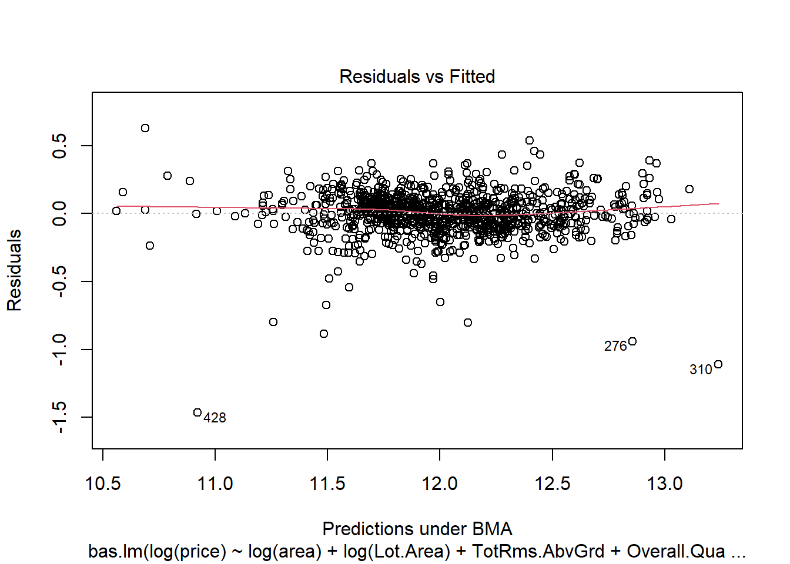
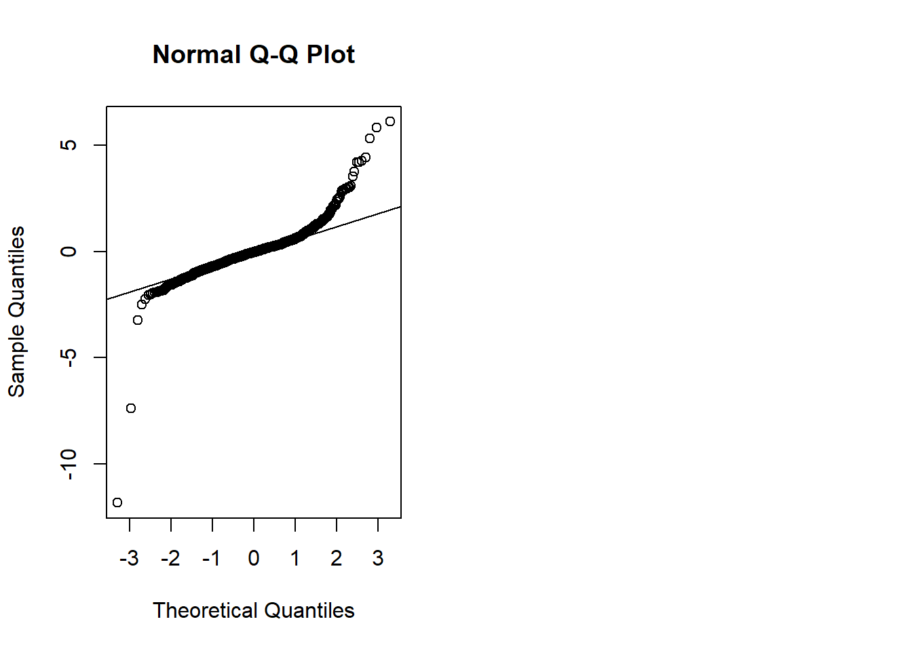
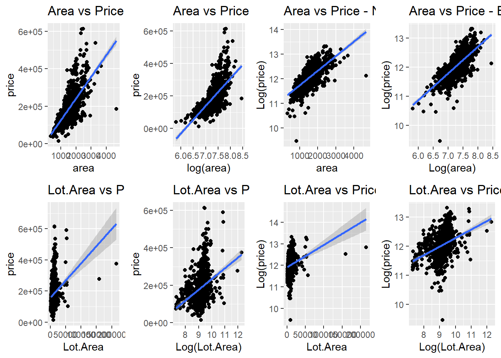
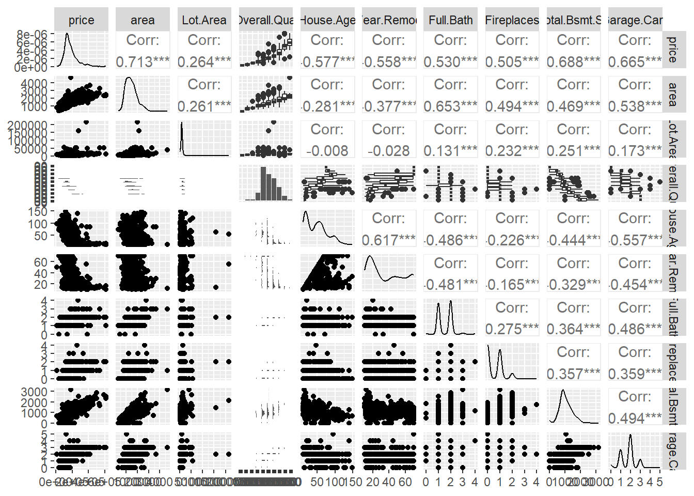
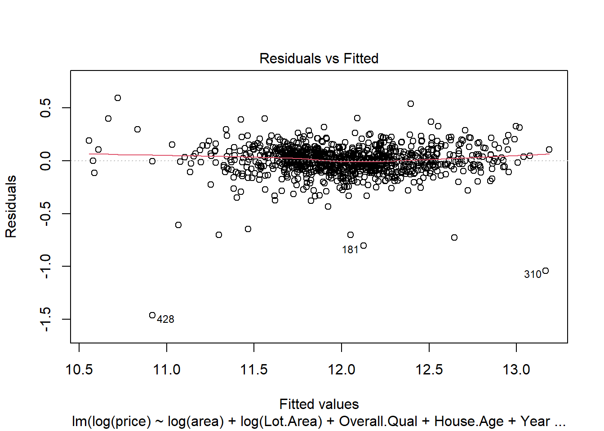
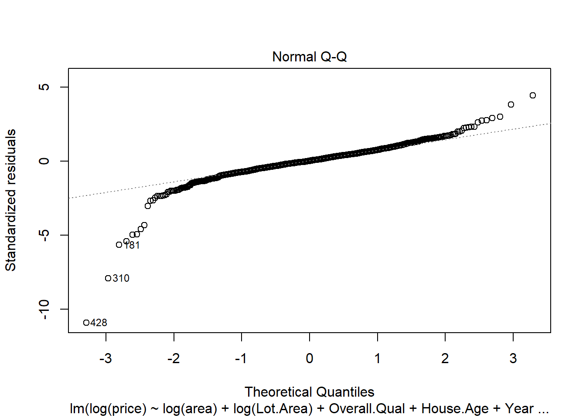
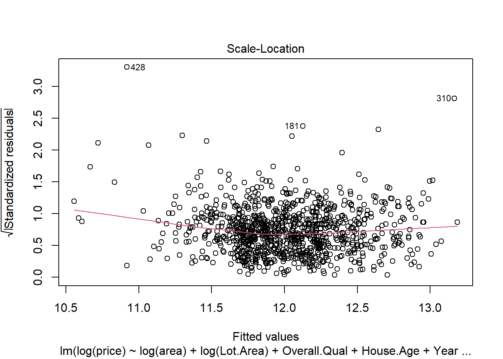
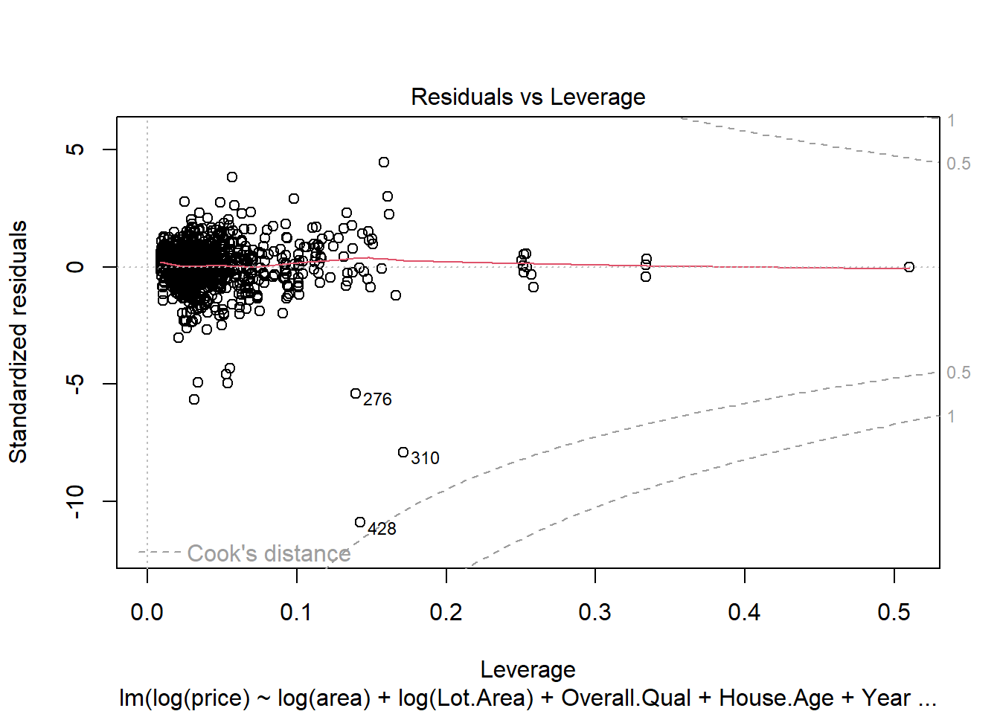

First R Project
Predicting House Price: Final Project
Background
As a statistical consultant working for a real estate investment firm, your task is to develop a model to predict the selling price of a given home in Ames, Iowa. Your employer hopes to use this information to help assess whether the asking price of a house is higher or lower than the true value of the house. If the home is undervalued, it may be a good investment for the firm.
Training Data and Relevant Packages
library(statsr)
library(dplyr)
library(BAS)
library(MASS)
library(GGally)## Warning: package 'ggplot2' was built under R version 4.2.2library(ggplot2)
library(knitr)
library(gridExtra)Part 1 - Exploratory Data Analysis (EDA)
For this analysis I want to discern the most significant predictors of house price. Hence, I’ll be looking at the relationship of housing price and other variables related to its location, size, quality and characteristics.
1.1. Setting up Data
ames_train%>% str()## 'data.frame': 1000 obs. of 81 variables:
## $ PID : int 909176150 905476230 911128020 535377150 534177230 908128060 902135020 528228540 923426010 908186050 ...
## $ area : int 856 1049 1001 1039 1665 1922 936 1246 889 1072 ...
## $ price : int 126000 139500 124900 114000 227000 198500 93000 187687 137500 140000 ...
## $ MS.SubClass : int 30 120 30 70 60 85 20 20 20 180 ...
## $ MS.Zoning : Factor w/ 6 levels "C (all)","FV",..: 5 5 1 5 5 5 6 5 5 6 ...
## $ Lot.Frontage : int NA 42 60 80 70 64 60 53 74 35 ...
## $ Lot.Area : int 7890 4235 6060 8146 8400 7301 6000 3710 12395 3675 ...
## $ Street : Factor w/ 2 levels "Grvl","Pave": 2 2 2 2 2 2 2 2 2 2 ...
## $ Alley : Factor w/ 2 levels "Grvl","Pave": NA NA NA NA NA NA 2 NA NA NA ...
## $ Lot.Shape : Factor w/ 4 levels "IR1","IR2","IR3",..: 4 4 4 4 4 4 4 4 4 4 ...
## $ Land.Contour : Factor w/ 4 levels "Bnk","HLS","Low",..: 4 4 4 4 4 4 1 4 4 4 ...
## $ Utilities : Factor w/ 1 level "AllPub": 1 1 1 1 1 1 1 1 1 1 ...
## $ Lot.Config : Factor w/ 5 levels "Corner","CulDSac",..: 1 5 5 1 5 1 5 5 1 5 ...
## $ Land.Slope : Factor w/ 3 levels "Gtl","Mod","Sev": 1 1 1 1 1 1 2 1 1 1 ...
## $ Neighborhood : Factor w/ 27 levels "Blmngtn","Blueste",..: 25 8 12 20 19 8 20 1 14 8 ...
## $ Condition.1 : Factor w/ 9 levels "Artery","Feedr",..: 3 3 3 3 3 3 3 3 3 3 ...
## $ Condition.2 : Factor w/ 6 levels "Artery","Feedr",..: 3 3 3 3 3 3 3 3 3 3 ...
## $ Bldg.Type : Factor w/ 5 levels "1Fam","2fmCon",..: 1 5 1 1 1 1 2 1 1 5 ...
## $ House.Style : Factor w/ 7 levels "1.5Fin","1.5Unf",..: 3 3 3 5 5 6 3 3 3 6 ...
## $ Overall.Qual : int 6 5 5 4 8 7 4 7 5 6 ...
## $ Overall.Cond : int 6 5 9 8 6 5 4 5 6 5 ...
## $ Year.Built : int 1939 1984 1930 1900 2001 2003 1953 2007 1984 2005 ...
## $ Year.Remod.Add : int 1950 1984 2007 2003 2001 2003 1953 2008 1984 2005 ...
## $ Roof.Style : Factor w/ 5 levels "Flat","Gable",..: 2 2 4 2 2 2 2 2 2 2 ...
## $ Roof.Matl : Factor w/ 5 levels "CompShg","Metal",..: 1 1 1 1 1 1 1 1 1 1 ...
## $ Exterior.1st : Factor w/ 12 levels "AsbShng","BrkComm",..: 11 5 7 7 10 5 7 12 5 10 ...
## $ Exterior.2nd : Factor w/ 13 levels "AsbShng","Brk Cmn",..: 12 6 8 8 11 6 8 13 9 11 ...
## $ Mas.Vnr.Type : Factor w/ 5 levels "","BrkCmn","BrkFace",..: 4 3 4 4 4 3 4 3 4 5 ...
## $ Mas.Vnr.Area : int 0 149 0 0 0 500 0 20 0 76 ...
## $ Exter.Qual : Factor w/ 4 levels "Ex","Fa","Gd",..: 4 3 3 3 3 3 2 3 4 4 ...
## $ Exter.Cond : Factor w/ 4 levels "Ex","Fa","Gd",..: 4 4 4 3 4 4 4 4 4 4 ...
## $ Foundation : Factor w/ 5 levels "BrkTil","CBlock",..: 2 2 1 1 3 4 2 3 2 3 ...
## $ Bsmt.Qual : Factor w/ 6 levels "","Ex","Fa","Gd",..: 6 4 6 3 4 NA 3 4 6 4 ...
## $ Bsmt.Cond : Factor w/ 6 levels "","Ex","Fa","Gd",..: 6 6 6 6 6 NA 6 6 6 6 ...
## $ Bsmt.Exposure : Factor w/ 5 levels "","Av","Gd","Mn",..: 5 4 5 5 5 NA 5 3 5 3 ...
## $ BsmtFin.Type.1 : Factor w/ 7 levels "","ALQ","BLQ",..: 6 4 2 7 4 NA 7 7 2 4 ...
## $ BsmtFin.SF.1 : int 238 552 737 0 643 0 0 0 647 467 ...
## $ BsmtFin.Type.2 : Factor w/ 7 levels "","ALQ","BLQ",..: 7 2 7 7 7 NA 7 7 7 7 ...
## $ BsmtFin.SF.2 : int 0 393 0 0 0 0 0 0 0 0 ...
## $ Bsmt.Unf.SF : int 618 104 100 405 167 0 936 1146 217 80 ...
## $ Total.Bsmt.SF : int 856 1049 837 405 810 0 936 1146 864 547 ...
## $ Heating : Factor w/ 5 levels "GasA","GasW",..: 1 1 1 1 1 1 1 1 1 1 ...
## $ Heating.QC : Factor w/ 5 levels "Ex","Fa","Gd",..: 5 5 1 3 1 1 5 1 5 1 ...
## $ Central.Air : Factor w/ 2 levels "N","Y": 2 2 2 2 2 2 1 2 2 2 ...
## $ Electrical : Factor w/ 4 levels "FuseA","FuseF",..: 4 4 4 4 4 4 4 4 4 4 ...
## $ X1st.Flr.SF : int 856 1049 1001 717 810 495 936 1246 889 1072 ...
## $ X2nd.Flr.SF : int 0 0 0 322 855 1427 0 0 0 0 ...
## $ Low.Qual.Fin.SF: int 0 0 0 0 0 0 0 0 0 0 ...
## $ Bsmt.Full.Bath : int 1 1 0 0 1 0 0 0 0 1 ...
## $ Bsmt.Half.Bath : int 0 0 0 0 0 0 0 0 0 0 ...
## $ Full.Bath : int 1 2 1 1 2 3 1 2 1 1 ...
## $ Half.Bath : int 0 0 0 0 1 0 0 0 0 0 ...
## $ Bedroom.AbvGr : int 2 2 2 2 3 4 2 2 3 2 ...
## $ Kitchen.AbvGr : int 1 1 1 1 1 1 1 1 1 1 ...
## $ Kitchen.Qual : Factor w/ 5 levels "Ex","Fa","Gd",..: 5 3 3 5 3 3 5 3 5 3 ...
## $ TotRms.AbvGrd : int 4 5 5 6 6 7 4 5 6 5 ...
## $ Functional : Factor w/ 7 levels "Maj1","Maj2",..: 7 7 7 7 7 7 4 7 7 7 ...
## $ Fireplaces : int 1 0 0 0 0 1 0 1 0 0 ...
## $ Fireplace.Qu : Factor w/ 5 levels "Ex","Fa","Gd",..: 3 NA NA NA NA 1 NA 3 NA NA ...
## $ Garage.Type : Factor w/ 6 levels "2Types","Attchd",..: 6 2 6 6 2 4 6 2 2 3 ...
## $ Garage.Yr.Blt : int 1939 1984 1930 1940 2001 2003 1974 2007 1984 2005 ...
## $ Garage.Finish : Factor w/ 4 levels "","Fin","RFn",..: 4 2 4 4 2 3 4 2 4 2 ...
## $ Garage.Cars : int 2 1 1 1 2 2 2 2 2 2 ...
## $ Garage.Area : int 399 266 216 281 528 672 576 428 484 525 ...
## $ Garage.Qual : Factor w/ 6 levels "","Ex","Fa","Gd",..: 6 6 6 6 6 6 6 6 6 6 ...
## $ Garage.Cond : Factor w/ 6 levels "","Ex","Fa","Gd",..: 6 6 5 6 6 6 6 6 6 6 ...
## $ Paved.Drive : Factor w/ 3 levels "N","P","Y": 3 3 1 1 3 3 3 3 3 3 ...
## $ Wood.Deck.SF : int 0 0 154 0 0 0 0 100 0 0 ...
## $ Open.Porch.SF : int 0 105 0 0 45 0 32 24 0 44 ...
## $ Enclosed.Porch : int 0 0 42 168 0 177 112 0 0 0 ...
## $ X3Ssn.Porch : int 0 0 86 0 0 0 0 0 0 0 ...
## $ Screen.Porch : int 166 0 0 111 0 0 0 0 0 0 ...
## $ Pool.Area : int 0 0 0 0 0 0 0 0 0 0 ...
## $ Pool.QC : Factor w/ 3 levels "Ex","Fa","Gd": NA NA NA NA NA NA NA NA NA NA ...
## $ Fence : Factor w/ 4 levels "GdPrv","GdWo",..: NA NA NA NA NA NA NA NA NA NA ...
## $ Misc.Feature : Factor w/ 4 levels "Gar2","Othr",..: NA NA NA NA NA NA NA NA NA NA ...
## $ Misc.Val : int 0 0 0 0 0 0 0 0 0 0 ...
## $ Mo.Sold : int 3 2 11 5 11 7 2 3 4 5 ...
## $ Yr.Sold : int 2010 2009 2007 2009 2009 2009 2009 2008 2008 2007 ...
## $ Sale.Type : Factor w/ 10 levels "COD","Con","ConLD",..: 10 10 10 10 10 3 10 7 10 10 ...
## $ Sale.Condition : Factor w/ 6 levels "Abnorml","AdjLand",..: 5 5 5 5 5 5 5 6 5 5 ...After looking at thedata, we see that the qualitative variables Overall.Qual and Overall.Cond are defined as integers. For our EDA, we’ll want to change these to factors. In addition to this, I want to look at missing data (NAs) that may impact the results of our data.
# Cleaning up data
ames_train$Overall.Qual <- factor(ames_train$Overall.Qual,ordered = TRUE)
ames_train$Overall.Cond <- factor(ames_train$Overall.Cond,ordered = TRUE)
# Observing NAs
sapply(ames_train, function(x) sum(is.na(x)))## PID area price MS.SubClass MS.Zoning
## 0 0 0 0 0
## Lot.Frontage Lot.Area Street Alley Lot.Shape
## 167 0 0 933 0
## Land.Contour Utilities Lot.Config Land.Slope Neighborhood
## 0 0 0 0 0
## Condition.1 Condition.2 Bldg.Type House.Style Overall.Qual
## 0 0 0 0 0
## Overall.Cond Year.Built Year.Remod.Add Roof.Style Roof.Matl
## 0 0 0 0 0
## Exterior.1st Exterior.2nd Mas.Vnr.Type Mas.Vnr.Area Exter.Qual
## 0 0 0 7 0
## Exter.Cond Foundation Bsmt.Qual Bsmt.Cond Bsmt.Exposure
## 0 0 21 21 21
## BsmtFin.Type.1 BsmtFin.SF.1 BsmtFin.Type.2 BsmtFin.SF.2 Bsmt.Unf.SF
## 21 1 21 1 1
## Total.Bsmt.SF Heating Heating.QC Central.Air Electrical
## 1 0 0 0 0
## X1st.Flr.SF X2nd.Flr.SF Low.Qual.Fin.SF Bsmt.Full.Bath Bsmt.Half.Bath
## 0 0 0 1 1
## Full.Bath Half.Bath Bedroom.AbvGr Kitchen.AbvGr Kitchen.Qual
## 0 0 0 0 0
## TotRms.AbvGrd Functional Fireplaces Fireplace.Qu Garage.Type
## 0 0 0 491 46
## Garage.Yr.Blt Garage.Finish Garage.Cars Garage.Area Garage.Qual
## 48 46 1 1 47
## Garage.Cond Paved.Drive Wood.Deck.SF Open.Porch.SF Enclosed.Porch
## 47 0 0 0 0
## X3Ssn.Porch Screen.Porch Pool.Area Pool.QC Fence
## 0 0 0 997 798
## Misc.Feature Misc.Val Mo.Sold Yr.Sold Sale.Type
## 971 0 0 0 0
## Sale.Condition
## 0na_count <- colSums(is.na(ames_train))
head(sort(na_count, decreasing = TRUE), 3)## Pool.QC Misc.Feature Alley
## 997 971 933The variables with the greatest amout of NAs are Pool.QCm Misc.Feature, and Ally. Since these are these are not necessary features of a house, a significant number of our observations fall into the NA cateogory. Omitting these NAs would thus skew our data as fundamentally different than houses with such features. Therefore, to conduct our linear analysis I will simply recode the NA values as another category.
1.2. Price Distributions
Since we’re looking at the price of the house. Let’s start by discerning the pricing distribtuion.
#price distributions
ames_train%>% summarise(mean = mean(ames_train$price), median = median(ames_train$price),
min = min(ames_train$price), max = max(ames_train$price),
IQR = IQR(ames_train$price))## mean median min max IQR
## 1 181190.1 159467 12789 615000 83237.5# visualization
ggplot(ames_train, aes(x = price)) + geom_histogram(fill= "Dark Green")## `stat_bin()` using `bins = 30`. Pick better value with `binwidth`.
The price of houses is right-skewed with the median house price being 159,467, the most expensive, 615,000, the least expensive, 12,789.
1.3. Price vs Location
I’ll start by looking at the relationship of a housing prices and neighborhoods. That is, the distribution of housing prices across the neighborhoods.
ggplot(data = ames_train, aes(x = Neighborhood, y = price)) + geom_boxplot(fill = "#99D8C9") +
labs(title = "Neighborhood Housing Prices", x = "Neighborhood", y= "Price") +
theme(axis.text.x = element_text(angle = 90))
From our graph, the neighborhood with the highest average housing prices appears to be StonerBr and that with the lowest is MeadowV. The neighborhoods with the greatest standard deviation are NridgHt and StonerBr.
Price_range <- ames_train%>% group_by(Neighborhood)%>%
summarise(median = median(price), sd = sd(price))
Most_expensive <- Price_range[which(Price_range$median == max(Price_range$median)),]
Most_expensive## # A tibble: 1 × 3
## Neighborhood median sd
## <fct> <dbl> <dbl>
## 1 StoneBr 340692. 123459.Least_expensive <- Price_range[which(Price_range$median == min(Price_range$median)),]
Least_expensive## # A tibble: 1 × 3
## Neighborhood median sd
## <fct> <dbl> <dbl>
## 1 MeadowV 85750 18940.Most_heterogeneous <-Price_range[which(Price_range$sd == max(Price_range$sd)),]
Most_heterogeneous## # A tibble: 1 × 3
## Neighborhood median sd
## <fct> <dbl> <dbl>
## 1 StoneBr 340692. 123459.Our findings demonstrate that MeadowV is the least expensive neighborhood, with a median house price of 85,750, and StonerBr is both the most expensive and most heterogeneous neighborhood with a median house price of 340,692 and a standard deviation of 123,459. This corrobates our previous findings, as the average house of MeadowV being 73,717 under the overall average. In comparison, the median housing price in StonerBr is 181,225 higher than the overall average.
1.4. Price vs Size
Next I want to look at the relationship between price and size. I’ll look at Lot.Area and area as determinents of size. I’ll look at the log transformation of Lot.Area, area and price to better discern the relationship.
p1 <- ggplot(ames_train, aes(x = log(Lot.Area), y = log(price))) + geom_point() +stat_smooth(method = 'lm')
p2 <- ggplot(ames_train, aes(x = log(area), y = log(price))) + geom_point() +stat_smooth(method = 'lm')
grid.arrange(p1, p2, ncol = 2)## `geom_smooth()` using formula = 'y ~ x'
## `geom_smooth()` using formula = 'y ~ x'
I can discern a strong positive relationship between log(area) and log(price). As the size of the house increases, so does its price. This positive relationship is discernable between log(Lot.Area) log(price) however this it is less strong. After a log(area) of 10, around 25000 sq ft, there is no apparent difference. Suggesting house area is a slightly better predictor of price than overall lot area.
1.5. Price vs Quality
Let’s start by looking at how quality and condition of the house compare with price.
p3 <- ggplot(data = ames_train, aes(x = Overall.Qual, y = log(price))) + geom_jitter()
p4 <- ggplot(data = ames_train, aes(x = Overall.Cond, y = log(price))) + geom_jitter()
grid.arrange(p3, p4, ncol = 2)
The Overall.Qual appears to have a strongly possitive relationship with log(price). Overall.Cond and log(price), on the other hand, have a very weak postive relationship. The majority of houses seem to be in relatively decent condition. Most houses on the market aren’t in devastating conditions. Given this, I can assume the quality of the house is a better predictor of price than its than its overall state/condition.
Asumming that newer houses tend to be of higher quality, let’s start by finding the age distribution of the houses.
# creating age variable
ames_train$House.Age <- sapply(ames_train$Year.Built, function(x) 2020- x)
# visualization
ggplot(data = ames_train, aes(x = House.Age)) + geom_histogram(bins = 30, fill= "skyblue", colour="black") +labs(title = "Distribution of House Age", x = "House Age", y = "Number of Houses") +
geom_vline(xintercept=mean(ames_train$House.Age), color="red") +
geom_vline(xintercept=median(ames_train$House.Age), color="green") 
ames_train%>% group_by(House.Age)%>%
summarise(count = n()) %>% arrange(desc(count))## # A tibble: 102 × 2
## House.Age count
## <dbl> <int>
## 1 15 49
## 2 14 48
## 3 13 38
## 4 16 37
## 5 43 27
## 6 17 25
## 7 58 20
## 8 100 20
## 9 20 18
## 10 26 18
## # … with 92 more rows
## # ℹ Use `print(n = ...)` to see more rows# age distribution
Age <- ames_train %>%
summarize(Mean = mean(ames_train$House.Age),
Median = median(ames_train$House.Age),
Sd_age = sd(ames_train$House.Age),
IQR = IQR(ames_train$House.Age))
Age## Mean Median Sd_age IQR
## 1 47.797 45 29.63741 46# Age vs Quality
ggplot(data=ames_train, aes(x= House.Age, fill= factor(Overall.Qual, levels = rev(levels(Overall.Qual)), labels = c("Very Excellent", "Excellent", "Very Good", "Good", "Above Average", "Average", "Below Average", "Fair", "Poor", "Very Poor")))) + geom_histogram(bins=60, aes(y=..density..)) + labs(title= "House Quality in Relation to Age", x= "Age", y= "Density", fill = "House Quality") + theme(title = element_text(face="bold"))## Warning: The dot-dot notation (`..density..`) was deprecated in ggplot2 3.4.0.
## ℹ Please use `after_stat(density)` instead.
Our findings show that the distribuiton of house age is multimodial and right-skewed. The majority of houses are rather young, around 15 years old. The median house age is around 45 years old and mean, slightly higher, around 48 years old. Comparing house ages with quality ratings, I see that houses under the age of 50 years old range from “Very Excellent” to “Below Average”. Houses 50 and over range from “Very Good” to “Very Poor”. Younger houses are more likely to be rated higher in quality than older.
In addition to age, let’s I’ll look at Year.Remod.Add, assuming that houses more recently renovated will be of higher quality.
# creating year last renovated variable
ames_train$Year.Remod <- sapply(ames_train$Year.Remod.Add, function(x) 2020- x)
# visualization
ggplot(data = ames_train, aes(x = Year.Remod)) + geom_histogram(bins = 30, fill= "skyblue", colour="black") +labs(title = "Distribution of Years Since Last Remodel", x = "Years", y = "Number of Houses") +
geom_vline(xintercept=mean(ames_train$Year.Remod), color="red") +
geom_vline(xintercept=median(ames_train$Year.Remod), color="green") 
ames_train%>% group_by(Year.Remod)%>%
summarise(count = n()) %>% arrange(desc(count))## # A tibble: 61 × 2
## Year.Remod count
## <dbl> <int>
## 1 70 115
## 2 14 67
## 3 13 57
## 4 15 50
## 5 20 38
## 6 16 33
## 7 17 30
## 8 12 29
## 9 18 28
## 10 22 28
## # … with 51 more rows
## # ℹ Use `print(n = ...)` to see more rows# year last renovated distributions
Years_lastremodel <- ames_train %>%
summarize(Mean = mean(ames_train$Year.Remod),
Median = median(ames_train$Year.Remod),
Sd = sd(ames_train$Year.Remod),
Max = max(ames_train$Year.Remod),
Min = min(ames_train$Year.Remod))
Years_lastremodel## Mean Median Sd Max Min
## 1 35.662 27.5 20.55749 70 10# Renovation vs Quality
ggplot(data=ames_train, aes(x= Year.Remod, fill= factor(Overall.Qual, levels = rev(levels(Overall.Qual)), labels = c("Very Excellent", "Excellent", "Very Good", "Good", "Above Average", "Average", "Below Average", "Fair", "Poor", "Very Poor")))) + geom_histogram(bins=60, aes(y=..density..)) + labs(title= "House Quality in Relation to Latest Renovation", x= "Years Since Last Renovation", y= "Density", fill = "House Quality") + theme(title = element_text(face="bold"))
The distribution of years since last renovation is multimodual. The median number of years since the last renovation is around 28 years ago, with the majority of renovations having occurred within less than 20 years or around 70 years. Given the majority of the houses in our population are younger, within forty years of age, house renovations are expected to be less common within our sample. That said, old enough houses that have been renovated within the past 40 years tend tend to range from “Very Excellent” to “Below Average”. Whereas older houses that have failed to renovate within the past 40 years are given poorer quality ratings.
p5 <- ggplot(data = ames_train, aes(x = House.Age, y = log(price))) + geom_jitter() + stat_smooth(method = 'lm')
p6 <- ggplot(data = ames_train, aes(x = Year.Remod, y = log(price))) + geom_jitter() + stat_smooth(method = 'lm')
grid.arrange(p5, p6, ncol = 2)## `geom_smooth()` using formula = 'y ~ x'
## `geom_smooth()` using formula = 'y ~ x'
Taken together, the quality of a house is seen to be negatively associated with its age and years since latest rennovation. Lower quality ratings, in turn, translates to lower value-based house prices.
1.6. Other Potential Predictors of Price
To supplement our findings, I’ll descern other influential factors by looking at variables with with the highest correlation coeficients in relation to price. Correlation coeficients meausure the strength of a relationship between two variables.
# highest correlations
data.correlation <- as.data.frame(sapply(ames_train, as.numeric))
correlations = cor(data.correlation, method = "s")## Warning in cor(data.correlation, method = "s"): the standard deviation is zeroprice_correlations = head(sort(correlations[,'price'], decreasing = TRUE), 10)
price_correlations## price Overall.Qual area Year.Built Full.Bath
## 1.0000000 0.8141672 0.7416398 0.7067068 0.6417792
## Year.Remod.Add X1st.Flr.SF Foundation Fireplaces TotRms.AbvGrd
## 0.6239773 0.6066751 0.5633840 0.5391941 0.5362176# visualization
p7 <- ggplot(data = ames_train, aes(x = Full.Bath, y = log(price))) + geom_jitter() + stat_smooth(method = 'lm')
p8 <- ggplot(data = ames_train, aes(x = X1st.Flr.SF, y = log(price))) + geom_jitter() + stat_smooth(method = 'lm')
p9 <- ggplot(data = ames_train, aes(x = Foundation, y = log(price))) + geom_jitter() + stat_smooth(method = 'lm')
p10 <- ggplot(data = ames_train, aes(x = Fireplaces, y = log(price))) + geom_jitter() + stat_smooth(method = 'lm')
p11 <- ggplot(data = ames_train, aes(x = TotRms.AbvGrd, y = log(price))) + geom_jitter() + stat_smooth(method = 'lm')
grid.arrange(p7, p8, p9, p10, p11, ncol = 3)## `geom_smooth()` using formula = 'y ~ x'
## `geom_smooth()` using formula = 'y ~ x'
## `geom_smooth()` using formula = 'y ~ x'
## `geom_smooth()` using formula = 'y ~ x'
## `geom_smooth()` using formula = 'y ~ x'
From our findings, I can see that Overall.Qual, area, Year.Built , Full.Bath, Year.Remod.Add, X1st.Flr.SF, Foundation, Fireplaces, TotRms.AbvGrd, and Open.Porch.SF have highest correlation to house price. This supplements our findings that size and determinents of quality impact house prices.
Part 2 - Development and assessment of an initial model, following a semi-guided process of analysis
2.1 Initial Model
There are numerous factors that affect house price. To construct our inital model I’ll pick 10 variables, using what I learned from our EDA. Again, for to better see these relationships I will log-transform price, area and Lot.Area. The variables that will be used are:
Area: The larger the area of the house, the greater the price.
Lot.Area: The position of the house and its size relation to the size of land will affect its price.
TotRms.AbvGrd: The number of rooms in the house, including bedrooms will influence buyers in getting a house. In general, the more rooms, the greater the size of the house, the more expensive the house will be.
Overall.Qual: The quality is an siginifcant reason for why and at what price a person would be a house.
House.Age: Better, more moder amenities accomany newer houses. This contributes to higher quality ratings, which in makes it more likely to be sold at a higher price.
Year.Remod: Newly rennovated houses tend to be of better quality, adding price value to the house. Full.Bath: Having a full bathroom one or more full bathrooms, increases the houses luxary aspect, making buyers more willing to pay more for it.
Fireplaces: In modern houses, fire places are amenities that are not essential. However, similarly to bathrooms, they add to the overall luxary aspect of the house and bring the comfort of heat. Having too many fireplaces in close vicinity to one another however is not only a fire risk but also unpleasant and redunant. Thus, pocession of fireplaces can be seen as a ratio to house size; larger houses have more fireplaces.
fullmodel <- lm(log(price) ~ log(area) + log(Lot.Area) + TotRms.AbvGrd + Overall.Qual + House.Age + Year.Remod + Full.Bath + Fireplaces, data = ames_train)
summary(fullmodel)##
## Call:
## lm(formula = log(price) ~ log(area) + log(Lot.Area) + TotRms.AbvGrd +
## Overall.Qual + House.Age + Year.Remod + Full.Bath + Fireplaces,
## data = ames_train)
##
## Residuals:
## Min 1Q Median 3Q Max
## -1.41856 -0.07726 0.00677 0.08723 0.67798
##
## Coefficients:
## Estimate Std. Error t value Pr(>|t|)
## (Intercept) 8.1875774 0.2287566 35.792 < 2e-16 ***
## log(area) 0.3952225 0.0357100 11.068 < 2e-16 ***
## log(Lot.Area) 0.1315847 0.0109832 11.981 < 2e-16 ***
## TotRms.AbvGrd -0.0095533 0.0058234 -1.641 0.10122
## Overall.Qual.L 1.2032640 0.1005189 11.971 < 2e-16 ***
## Overall.Qual.Q -0.0818616 0.0914913 -0.895 0.37114
## Overall.Qual.C 0.0077527 0.0820947 0.094 0.92478
## Overall.Qual^4 0.0578200 0.0659738 0.876 0.38102
## Overall.Qual^5 -0.2426948 0.0494952 -4.903 1.10e-06 ***
## Overall.Qual^6 0.1063173 0.0410060 2.593 0.00966 **
## Overall.Qual^7 -0.1140211 0.0353410 -3.226 0.00130 **
## Overall.Qual^8 0.0858811 0.0261853 3.280 0.00108 **
## Overall.Qual^9 -0.0356300 0.0153960 -2.314 0.02086 *
## House.Age -0.0032878 0.0002545 -12.917 < 2e-16 ***
## Year.Remod -0.0025833 0.0003470 -7.445 2.11e-13 ***
## Full.Bath -0.0321747 0.0145700 -2.208 0.02746 *
## Fireplaces 0.0623870 0.0095056 6.563 8.51e-11 ***
## ---
## Signif. codes: 0 '***' 0.001 '**' 0.01 '*' 0.05 '.' 0.1 ' ' 1
##
## Residual standard error: 0.1626 on 983 degrees of freedom
## Multiple R-squared: 0.853, Adjusted R-squared: 0.8506
## F-statistic: 356.4 on 16 and 983 DF, p-value: < 2.2e-16The adjusted R-squared of the model comes out as 0.8506 meaning the predictors in the model show a relatively strong relationship with price.
2.2 Model Selection
I’ll apply backwards model selection to AIC and BIC modeling. I’ll then compare these to BAS model selection.
# Backwards Stepwise AIC Model Selection
AIC.model <- stepAIC(fullmodel)## Start: AIC=-3616.27
## log(price) ~ log(area) + log(Lot.Area) + TotRms.AbvGrd + Overall.Qual +
## House.Age + Year.Remod + Full.Bath + Fireplaces
##
## Df Sum of Sq RSS AIC
## <none> 25.984 -3616.3
## - TotRms.AbvGrd 1 0.0711 26.055 -3615.5
## - Full.Bath 1 0.1289 26.113 -3613.3
## - Fireplaces 1 1.1386 27.123 -3575.4
## - Year.Remod 1 1.4653 27.449 -3563.4
## - log(area) 1 3.2379 29.222 -3500.8
## - log(Lot.Area) 1 3.7941 29.778 -3482.0
## - House.Age 1 4.4101 30.394 -3461.5
## - Overall.Qual 9 12.8465 38.831 -3232.5AIC.model$anova## Stepwise Model Path
## Analysis of Deviance Table
##
## Initial Model:
## log(price) ~ log(area) + log(Lot.Area) + TotRms.AbvGrd + Overall.Qual +
## House.Age + Year.Remod + Full.Bath + Fireplaces
##
## Final Model:
## log(price) ~ log(area) + log(Lot.Area) + TotRms.AbvGrd + Overall.Qual +
## House.Age + Year.Remod + Full.Bath + Fireplaces
##
##
## Step Df Deviance Resid. Df Resid. Dev AIC
## 1 983 25.98416 -3616.268# Backwards Stepwise BIC Model Selection
BIC.model <- stepAIC(fullmodel, k = log(nrow(ames_train)))## Start: AIC=-3532.84
## log(price) ~ log(area) + log(Lot.Area) + TotRms.AbvGrd + Overall.Qual +
## House.Age + Year.Remod + Full.Bath + Fireplaces
##
## Df Sum of Sq RSS AIC
## - TotRms.AbvGrd 1 0.0711 26.055 -3537.0
## - Full.Bath 1 0.1289 26.113 -3534.8
## <none> 25.984 -3532.8
## - Fireplaces 1 1.1386 27.123 -3496.9
## - Year.Remod 1 1.4653 27.449 -3484.9
## - log(area) 1 3.2379 29.222 -3422.3
## - log(Lot.Area) 1 3.7941 29.778 -3403.5
## - House.Age 1 4.4101 30.394 -3383.0
## - Overall.Qual 9 12.8465 38.831 -3193.3
##
## Step: AIC=-3537.01
## log(price) ~ log(area) + log(Lot.Area) + Overall.Qual + House.Age +
## Year.Remod + Full.Bath + Fireplaces
##
## Df Sum of Sq RSS AIC
## - Full.Bath 1 0.1466 26.202 -3538.3
## <none> 26.055 -3537.0
## - Fireplaces 1 1.2008 27.256 -3498.9
## - Year.Remod 1 1.5068 27.562 -3487.7
## - log(Lot.Area) 1 3.7234 29.779 -3410.3
## - House.Age 1 4.5300 30.585 -3383.6
## - log(area) 1 4.6351 30.690 -3380.2
## - Overall.Qual 9 13.0066 39.062 -3194.3
##
## Step: AIC=-3538.31
## log(price) ~ log(area) + log(Lot.Area) + Overall.Qual + House.Age +
## Year.Remod + Fireplaces
##
## Df Sum of Sq RSS AIC
## <none> 26.202 -3538.3
## - Fireplaces 1 1.3297 27.532 -3495.7
## - Year.Remod 1 1.4429 27.645 -3491.6
## - log(Lot.Area) 1 3.7533 29.955 -3411.3
## - House.Age 1 4.4171 30.619 -3389.4
## - log(area) 1 5.3148 31.517 -3360.5
## - Overall.Qual 9 13.4337 39.636 -3186.6BIC.model$anova ## Stepwise Model Path
## Analysis of Deviance Table
##
## Initial Model:
## log(price) ~ log(area) + log(Lot.Area) + TotRms.AbvGrd + Overall.Qual +
## House.Age + Year.Remod + Full.Bath + Fireplaces
##
## Final Model:
## log(price) ~ log(area) + log(Lot.Area) + Overall.Qual + House.Age +
## Year.Remod + Fireplaces
##
##
## Step Df Deviance Resid. Df Resid. Dev AIC
## 1 983 25.98416 -3532.837
## 2 - TotRms.AbvGrd 1 0.07113928 984 26.05529 -3537.010
## 3 - Full.Bath 1 0.14661385 985 26.20191 -3538.307# BAM Model Selection
BAS.model <- bas.lm(log(price) ~ log(area) + log(Lot.Area) + TotRms.AbvGrd + Overall.Qual + House.Age + Year.Remod + Full.Bath + Fireplaces, data = ames_train, prior = "AIC", modelprior=uniform())
image(BAS.model, rotate = FALSE)## Warning in par(par.old): argument 1 does not name a graphical parameter
Initial Model: (log(price) ~ log(area) + log(Lot.Area) + TotRms.AbvGrd + Overall.Qual + House.Age + Year.Remod + Full.Bath + Fireplaces, data = ames_train) summary(fullmodel)
AIC-Model: log(price) ~ log(area) + log(Lot.Area) + TotRms.AbvGrd + Overall.Qual + House.Age + Year.Remod + Full.Bath + Fireplaces
BIC-Model: log(price) ~ log(area) + log(Lot.Area) + Overall.Qual + House.Age + Year.Remod + Fireplaces
After carrying out model selection, the AIC and BIC selection criterion don’t generate the exact same model. The AIC model includes all of the given predictors from our initial model. In contrast, the BIC model omits the factors TotRms.AbvGrd and Full.Bath. The BIC model puts greater weight on these additional parameters, and penalizes them more heavily than the AIC model. The BMA modeling, however, agrees with the AIC model. Weighing these models, I’ll leave all parameters within the model.
2.3 Initial Model Residuals
# residual plot
plot(BAS.model, which=1)
# Q-Q plot
test_pred <- predict(BAS.model,ames_train,estimator = "BMA")
test_resid <- na.omit(ames_train$price - exp(test_pred$fit))
resid_mu <- mean(test_resid, na.rm=TRUE)
resid_sd <- sd(test_resid, na.rm=TRUE)
resid_std <- (test_resid - resid_mu)/resid_sd
par(mfrow=c(1,2))
qqnorm(resid_std, lty = 2)
qqline(resid_std)
Looking at the residuals plot (Residuals vs Fitted), I see that residuals are evenly dispersed around the 0. From this I can discern linearity and constant variability in our model; that is, a relatively linear relationship between our the selected predictors and price, the outcome variable. From the plot however I can discern several significant outliers. These being, houses 428, 276, and 310 have been overpriced. Out probability plot curves slightly up and to the right demonstrating outlier homes that are being overpriced.
2.4 Initial Model RMSE
#rmse training prediction
BAS.model <- bas.lm(log(price) ~ log(area) + log(Lot.Area) + TotRms.AbvGrd + Overall.Qual + House.Age + Year.Remod + Full.Bath + Fireplaces, data = ames_train, prior = "AIC", modelprior=uniform())
pred_BASmodel <- predict(BAS.model,ames_train,estimator = "BMA")
resid_BASmodel <- na.omit(ames_train$price - exp(pred_BASmodel$fit))
rmse_BASmodel <- sqrt(mean(resid_BASmodel^2))
rmse_BASmodel## [1] 32052.73THE RMSE for BMA model under ames_train is 32,052.73 dollars.
2.5 Overfitting
ames_test <- read.csv("C:/Users/alecoo/OneDrive - Karolinska Institutet/Desktop/r/ames_test.csv",
header = T,
sep = ",",
stringsAsFactors = T)# Add new variables to test dataset
ames_test$House.Age <- sapply(ames_test$Year.Built, function(x) 2020- x)
ames_test$Year.Remod <- sapply(ames_test$Year.Remod.Add, function(x) 2020- x)
# Change to factors
ames_test$Overall.Qual <- factor(ames_test$Overall.Qual,ordered = TRUE)
ames_test$Overall.Cond <- factor(ames_test$Overall.Cond,ordered = TRUE)
# rmse test prediction
pred_test <- predict(BAS.model,ames_test,estimator = "BMA")
resid_test <- na.omit(ames_test$price - exp(pred_test$fit))
rmse_test <- sqrt(mean(resid_test^2))
rmse_test## [1] 27472.81The RMSE for BMA model under ames_test is 27,472.81 dollars. The RMSE generated from the test data is slightly lower than that generated from our training data, which was 32,052.73 dollars. Since the model is built on the training data, the RMSE of the training data is expected to be lower. This phenomenon is known as overfitting. Given that in this care I see the opposite effect, that the test predictions are more accurate, I can conclude that the model isn’t overfitting the data. Despite their slight difference however the RMSEs are still comparable and indicate relative similar accuracy between the datasets.
Part 3 - Development of a Final Model
3.1 Final Model
Since the initial model proved to be reliable, all the parameters within from the previous model will be used again in the final model. In addition to these, I’ll be adding the following the following variables:
Neighborhood: The location of the house impacts housing value and the price buyers are willing to pay. X1st.Flr.SF: Similar to total area, we’d expect a postitive relationship between price and area of the first floor of house. Total.Bsmt.SF: Again, increased overall size, even in storage space, is exepcted to have positive relationsip witexpected with price. Garage.Area: The area of the garage is increases overall size, which in turn has positive impact on price. Foundation: The material makeup of a house impacts its overall price. Higher-priced building materials like concrete or brick will result in a more expensive house. Central.Air: Having central air is a commodity that can increase home price. Garage.Cars: Increase in the number of cars expected to be positively associated with price.
#Variable selection
Finalmodel_test <- lm(log(price) ~ log(area) + log(Lot.Area) + TotRms.AbvGrd + Overall.Qual + House.Age + Year.Remod + Full.Bath + Fireplaces + Neighborhood + Foundation + X1st.Flr.SF + Total.Bsmt.SF + Garage.Area + Garage.Cars + Central.Air, data = ames_train)
summary(Finalmodel_test)##
## Call:
## lm(formula = log(price) ~ log(area) + log(Lot.Area) + TotRms.AbvGrd +
## Overall.Qual + House.Age + Year.Remod + Full.Bath + Fireplaces +
## Neighborhood + Foundation + X1st.Flr.SF + Total.Bsmt.SF +
## Garage.Area + Garage.Cars + Central.Air, data = ames_train)
##
## Residuals:
## Min 1Q Median 3Q Max
## -1.46193 -0.06050 0.00405 0.07194 0.59039
##
## Coefficients:
## Estimate Std. Error t value Pr(>|t|)
## (Intercept) 8.698e+00 2.319e-01 37.505 < 2e-16 ***
## log(area) 3.220e-01 3.444e-02 9.350 < 2e-16 ***
## log(Lot.Area) 8.382e-02 1.434e-02 5.846 6.93e-09 ***
## TotRms.AbvGrd 1.064e-03 5.470e-03 0.194 0.845861
## Overall.Qual.L 8.581e-01 9.702e-02 8.845 < 2e-16 ***
## Overall.Qual.Q -1.209e-01 8.770e-02 -1.378 0.168466
## Overall.Qual.C 1.897e-02 7.672e-02 0.247 0.804758
## Overall.Qual^4 4.715e-02 6.168e-02 0.764 0.444849
## Overall.Qual^5 -1.764e-01 4.637e-02 -3.803 0.000152 ***
## Overall.Qual^6 8.021e-02 3.779e-02 2.123 0.034051 *
## Overall.Qual^7 -9.675e-02 3.213e-02 -3.012 0.002666 **
## Overall.Qual^8 4.931e-02 2.391e-02 2.062 0.039466 *
## Overall.Qual^9 -2.003e-02 1.420e-02 -1.410 0.158859
## House.Age -2.140e-03 4.385e-04 -4.881 1.24e-06 ***
## Year.Remod -2.523e-03 3.319e-04 -7.600 7.09e-14 ***
## Full.Bath -2.117e-02 1.394e-02 -1.519 0.129197
## Fireplaces 4.929e-02 9.304e-03 5.298 1.46e-07 ***
## NeighborhoodBlueste -4.292e-02 9.803e-02 -0.438 0.661621
## NeighborhoodBrDale -1.447e-01 6.900e-02 -2.097 0.036295 *
## NeighborhoodBrkSide 2.897e-02 5.815e-02 0.498 0.618402
## NeighborhoodClearCr 5.888e-02 6.672e-02 0.882 0.377738
## NeighborhoodCollgCr -1.346e-02 4.990e-02 -0.270 0.787354
## NeighborhoodCrawfor 1.593e-01 5.775e-02 2.759 0.005907 **
## NeighborhoodEdwards -4.011e-02 5.375e-02 -0.746 0.455690
## NeighborhoodGilbert -5.904e-02 5.287e-02 -1.117 0.264376
## NeighborhoodGreens 8.669e-02 8.932e-02 0.971 0.331994
## NeighborhoodGrnHill 4.830e-01 1.145e-01 4.220 2.68e-05 ***
## NeighborhoodIDOTRR -1.002e-01 5.987e-02 -1.674 0.094411 .
## NeighborhoodMeadowV -1.367e-01 6.315e-02 -2.165 0.030624 *
## NeighborhoodMitchel -6.992e-03 5.358e-02 -0.131 0.896190
## NeighborhoodNAmes 6.971e-03 5.230e-02 0.133 0.893982
## NeighborhoodNoRidge 9.767e-02 5.583e-02 1.749 0.080544 .
## NeighborhoodNPkVill -2.253e-02 8.735e-02 -0.258 0.796512
## NeighborhoodNridgHt 9.511e-02 5.168e-02 1.840 0.066023 .
## NeighborhoodNWAmes -4.037e-03 5.391e-02 -0.075 0.940328
## NeighborhoodOldTown -2.583e-02 5.763e-02 -0.448 0.654133
## NeighborhoodSawyer 2.580e-03 5.399e-02 0.048 0.961897
## NeighborhoodSawyerW -5.353e-02 5.229e-02 -1.024 0.306279
## NeighborhoodSomerst 4.852e-02 4.933e-02 0.984 0.325611
## NeighborhoodStoneBr 1.568e-01 5.806e-02 2.701 0.007033 **
## NeighborhoodSWISU 3.778e-02 6.849e-02 0.552 0.581326
## NeighborhoodTimber 5.539e-02 5.815e-02 0.953 0.341055
## NeighborhoodVeenker -9.655e-03 6.815e-02 -0.142 0.887361
## FoundationCBlock 3.159e-03 2.102e-02 0.150 0.880577
## FoundationPConc 3.226e-02 2.354e-02 1.370 0.170897
## FoundationSlab 6.180e-02 5.470e-02 1.130 0.258819
## FoundationStone 1.719e-01 8.776e-02 1.959 0.050463 .
## X1st.Flr.SF -3.837e-05 2.783e-05 -1.379 0.168288
## Total.Bsmt.SF 1.408e-04 2.441e-05 5.770 1.07e-08 ***
## Garage.Area 3.028e-05 5.415e-05 0.559 0.576098
## Garage.Cars 2.519e-02 1.632e-02 1.544 0.122979
## Central.AirY 1.553e-01 2.447e-02 6.347 3.40e-10 ***
## ---
## Signif. codes: 0 '***' 0.001 '**' 0.01 '*' 0.05 '.' 0.1 ' ' 1
##
## Residual standard error: 0.1446 on 946 degrees of freedom
## (2 observations deleted due to missingness)
## Multiple R-squared: 0.8878, Adjusted R-squared: 0.8817
## F-statistic: 146.7 on 51 and 946 DF, p-value: < 2.2e-16The model generates an adjusted R-squared value of 0.8768, which demonstrates a strong relationship between the selected predictors (independent variables) and price (dependent variable).
# Backwards Stepwise AIC Model Selection
AIC.model.fin <- stepAIC(Finalmodel_test)## Start: AIC=-3809.71
## log(price) ~ log(area) + log(Lot.Area) + TotRms.AbvGrd + Overall.Qual +
## House.Age + Year.Remod + Full.Bath + Fireplaces + Neighborhood +
## Foundation + X1st.Flr.SF + Total.Bsmt.SF + Garage.Area +
## Garage.Cars + Central.Air
##
## Df Sum of Sq RSS AIC
## - TotRms.AbvGrd 1 0.0008 19.772 -3811.7
## - Garage.Area 1 0.0065 19.777 -3811.4
## <none> 19.771 -3809.7
## - X1st.Flr.SF 1 0.0397 19.811 -3809.7
## - Full.Bath 1 0.0482 19.819 -3809.3
## - Garage.Cars 1 0.0498 19.821 -3809.2
## - Foundation 4 0.1740 19.945 -3809.0
## - House.Age 1 0.4980 20.269 -3786.9
## - Fireplaces 1 0.5865 20.357 -3782.5
## - Total.Bsmt.SF 1 0.6958 20.467 -3777.2
## - log(Lot.Area) 1 0.7142 20.485 -3776.3
## - Central.Air 1 0.8419 20.613 -3770.1
## - Year.Remod 1 1.2073 20.978 -3752.6
## - Neighborhood 26 2.9199 22.691 -3724.2
## - log(area) 1 1.8270 21.598 -3723.5
## - Overall.Qual 9 4.2853 24.056 -3631.9
##
## Step: AIC=-3811.67
## log(price) ~ log(area) + log(Lot.Area) + Overall.Qual + House.Age +
## Year.Remod + Full.Bath + Fireplaces + Neighborhood + Foundation +
## X1st.Flr.SF + Total.Bsmt.SF + Garage.Area + Garage.Cars +
## Central.Air
##
## Df Sum of Sq RSS AIC
## - Garage.Area 1 0.0062 19.778 -3813.4
## <none> 19.772 -3811.7
## - X1st.Flr.SF 1 0.0402 19.812 -3811.6
## - Full.Bath 1 0.0475 19.819 -3811.3
## - Garage.Cars 1 0.0511 19.823 -3811.1
## - Foundation 4 0.1734 19.945 -3811.0
## - House.Age 1 0.4977 20.269 -3788.9
## - Fireplaces 1 0.5869 20.358 -3784.5
## - Total.Bsmt.SF 1 0.6951 20.467 -3779.2
## - log(Lot.Area) 1 0.7342 20.506 -3777.3
## - Central.Air 1 0.8449 20.616 -3771.9
## - Year.Remod 1 1.2065 20.978 -3754.6
## - Neighborhood 26 2.9195 22.691 -3726.2
## - log(area) 1 3.2308 23.002 -3662.6
## - Overall.Qual 9 4.2849 24.056 -3633.9
##
## Step: AIC=-3813.35
## log(price) ~ log(area) + log(Lot.Area) + Overall.Qual + House.Age +
## Year.Remod + Full.Bath + Fireplaces + Neighborhood + Foundation +
## X1st.Flr.SF + Total.Bsmt.SF + Garage.Cars + Central.Air
##
## Df Sum of Sq RSS AIC
## - X1st.Flr.SF 1 0.0382 19.816 -3813.4
## <none> 19.778 -3813.4
## - Foundation 4 0.1709 19.949 -3812.8
## - Full.Bath 1 0.0514 19.829 -3812.8
## - Garage.Cars 1 0.2507 20.028 -3802.8
## - House.Age 1 0.4997 20.277 -3790.5
## - Fireplaces 1 0.5856 20.363 -3786.2
## - Total.Bsmt.SF 1 0.6974 20.475 -3780.8
## - log(Lot.Area) 1 0.7769 20.555 -3776.9
## - Central.Air 1 0.8639 20.642 -3772.7
## - Year.Remod 1 1.2030 20.981 -3756.4
## - Neighborhood 26 2.9173 22.695 -3728.0
## - log(area) 1 3.2321 23.010 -3664.3
## - Overall.Qual 9 4.2845 24.062 -3635.7
##
## Step: AIC=-3813.43
## log(price) ~ log(area) + log(Lot.Area) + Overall.Qual + House.Age +
## Year.Remod + Full.Bath + Fireplaces + Neighborhood + Foundation +
## Total.Bsmt.SF + Garage.Cars + Central.Air
##
## Df Sum of Sq RSS AIC
## - Foundation 4 0.1589 19.975 -3813.5
## <none> 19.816 -3813.4
## - Full.Bath 1 0.0551 19.871 -3812.7
## - Garage.Cars 1 0.2332 20.049 -3803.7
## - House.Age 1 0.5362 20.352 -3788.8
## - Fireplaces 1 0.5581 20.374 -3787.7
## - log(Lot.Area) 1 0.7525 20.569 -3778.2
## - Central.Air 1 0.8646 20.680 -3772.8
## - Total.Bsmt.SF 1 1.0327 20.849 -3764.7
## - Year.Remod 1 1.1735 20.989 -3758.0
## - Neighborhood 26 2.8815 22.698 -3729.9
## - log(area) 1 3.2356 23.052 -3664.5
## - Overall.Qual 9 4.2828 24.099 -3636.1
##
## Step: AIC=-3813.45
## log(price) ~ log(area) + log(Lot.Area) + Overall.Qual + House.Age +
## Year.Remod + Full.Bath + Fireplaces + Neighborhood + Total.Bsmt.SF +
## Garage.Cars + Central.Air
##
## Df Sum of Sq RSS AIC
## <none> 19.975 -3813.5
## - Full.Bath 1 0.0650 20.040 -3812.2
## - Garage.Cars 1 0.3046 20.279 -3800.3
## - Fireplaces 1 0.5345 20.509 -3789.1
## - House.Age 1 0.7118 20.687 -3780.5
## - log(Lot.Area) 1 0.7196 20.695 -3780.1
## - Central.Air 1 0.7889 20.764 -3776.8
## - Total.Bsmt.SF 1 1.0942 21.069 -3762.2
## - Year.Remod 1 1.3011 21.276 -3752.5
## - Neighborhood 26 2.8855 22.860 -3730.8
## - log(area) 1 3.3950 23.370 -3658.8
## - Overall.Qual 9 4.4600 24.435 -3630.3AIC.model.fin$anova## Stepwise Model Path
## Analysis of Deviance Table
##
## Initial Model:
## log(price) ~ log(area) + log(Lot.Area) + TotRms.AbvGrd + Overall.Qual +
## House.Age + Year.Remod + Full.Bath + Fireplaces + Neighborhood +
## Foundation + X1st.Flr.SF + Total.Bsmt.SF + Garage.Area +
## Garage.Cars + Central.Air
##
## Final Model:
## log(price) ~ log(area) + log(Lot.Area) + Overall.Qual + House.Age +
## Year.Remod + Full.Bath + Fireplaces + Neighborhood + Total.Bsmt.SF +
## Garage.Cars + Central.Air
##
##
## Step Df Deviance Resid. Df Resid. Dev AIC
## 1 946 19.77077 -3809.705
## 2 - TotRms.AbvGrd 1 0.0007902628 947 19.77156 -3811.665
## 3 - Garage.Area 1 0.0061942359 948 19.77776 -3813.353
## 4 - X1st.Flr.SF 1 0.0382212357 949 19.81598 -3813.426
## 5 - Foundation 4 0.1589451430 953 19.97493 -3813.453# Backwards Stepwise BIC Model Selection
BIC.model.fin <- stepAIC(Finalmodel_test, k = log(nrow(ames_train)))## Start: AIC=-3554.5
## log(price) ~ log(area) + log(Lot.Area) + TotRms.AbvGrd + Overall.Qual +
## House.Age + Year.Remod + Full.Bath + Fireplaces + Neighborhood +
## Foundation + X1st.Flr.SF + Total.Bsmt.SF + Garage.Area +
## Garage.Cars + Central.Air
##
## Df Sum of Sq RSS AIC
## - Neighborhood 26 2.9199 22.691 -3596.6
## - Foundation 4 0.1740 19.945 -3573.4
## - TotRms.AbvGrd 1 0.0008 19.772 -3561.4
## - Garage.Area 1 0.0065 19.777 -3561.1
## - X1st.Flr.SF 1 0.0397 19.811 -3559.4
## - Full.Bath 1 0.0482 19.819 -3559.0
## - Garage.Cars 1 0.0498 19.821 -3558.9
## <none> 19.771 -3554.5
## - House.Age 1 0.4980 20.269 -3536.6
## - Fireplaces 1 0.5865 20.357 -3532.2
## - Total.Bsmt.SF 1 0.6958 20.467 -3526.9
## - log(Lot.Area) 1 0.7142 20.485 -3526.0
## - Central.Air 1 0.8419 20.613 -3519.8
## - Year.Remod 1 1.2073 20.978 -3502.3
## - log(area) 1 1.8270 21.598 -3473.2
## - Overall.Qual 9 4.2853 24.056 -3420.9
##
## Step: AIC=-3596.63
## log(price) ~ log(area) + log(Lot.Area) + TotRms.AbvGrd + Overall.Qual +
## House.Age + Year.Remod + Full.Bath + Fireplaces + Foundation +
## X1st.Flr.SF + Total.Bsmt.SF + Garage.Area + Garage.Cars +
## Central.Air
##
## Df Sum of Sq RSS AIC
## - Foundation 4 0.1645 22.855 -3617.1
## - TotRms.AbvGrd 1 0.0004 22.691 -3603.5
## - X1st.Flr.SF 1 0.0029 22.694 -3603.4
## - Garage.Area 1 0.0037 22.694 -3603.4
## - Garage.Cars 1 0.0758 22.767 -3600.2
## - Full.Bath 1 0.0848 22.776 -3599.8
## <none> 22.691 -3596.6
## - Total.Bsmt.SF 1 0.7365 23.427 -3571.7
## - Fireplaces 1 0.8354 23.526 -3567.5
## - Central.Air 1 0.8827 23.573 -3565.5
## - House.Age 1 0.9364 23.627 -3563.2
## - Year.Remod 1 1.1332 23.824 -3554.9
## - log(Lot.Area) 1 1.6844 24.375 -3532.1
## - log(area) 1 1.9325 24.623 -3522.0
## - Overall.Qual 9 7.3692 30.060 -3378.1
##
## Step: AIC=-3617.05
## log(price) ~ log(area) + log(Lot.Area) + TotRms.AbvGrd + Overall.Qual +
## House.Age + Year.Remod + Full.Bath + Fireplaces + X1st.Flr.SF +
## Total.Bsmt.SF + Garage.Area + Garage.Cars + Central.Air
##
## Df Sum of Sq RSS AIC
## - Garage.Area 1 0.0013 22.856 -3623.9
## - TotRms.AbvGrd 1 0.0020 22.857 -3623.9
## - X1st.Flr.SF 1 0.0021 22.857 -3623.9
## - Full.Bath 1 0.0775 22.933 -3620.6
## - Garage.Cars 1 0.1170 22.972 -3618.9
## <none> 22.855 -3617.1
## - Fireplaces 1 0.7693 23.625 -3590.9
## - Central.Air 1 0.7862 23.641 -3590.2
## - Total.Bsmt.SF 1 0.8343 23.689 -3588.2
## - Year.Remod 1 1.3691 24.224 -3565.9
## - House.Age 1 1.5572 24.412 -3558.2
## - log(Lot.Area) 1 1.6609 24.516 -3553.9
## - log(area) 1 2.0727 24.928 -3537.3
## - Overall.Qual 9 7.8149 30.670 -3385.7
##
## Step: AIC=-3623.91
## log(price) ~ log(area) + log(Lot.Area) + TotRms.AbvGrd + Overall.Qual +
## House.Age + Year.Remod + Full.Bath + Fireplaces + X1st.Flr.SF +
## Total.Bsmt.SF + Garage.Cars + Central.Air
##
## Df Sum of Sq RSS AIC
## - X1st.Flr.SF 1 0.0018 22.858 -3630.7
## - TotRms.AbvGrd 1 0.0023 22.859 -3630.7
## - Full.Bath 1 0.0809 22.937 -3627.3
## <none> 22.856 -3623.9
## - Garage.Cars 1 0.4130 23.269 -3612.9
## - Fireplaces 1 0.7685 23.625 -3597.8
## - Central.Air 1 0.7985 23.655 -3596.5
## - Total.Bsmt.SF 1 0.8351 23.692 -3595.0
## - Year.Remod 1 1.3678 24.224 -3572.8
## - House.Age 1 1.5640 24.420 -3564.8
## - log(Lot.Area) 1 1.7011 24.558 -3559.2
## - log(area) 1 2.0931 24.950 -3543.4
## - Overall.Qual 9 7.8222 30.679 -3392.3
##
## Step: AIC=-3630.73
## log(price) ~ log(area) + log(Lot.Area) + TotRms.AbvGrd + Overall.Qual +
## House.Age + Year.Remod + Full.Bath + Fireplaces + Total.Bsmt.SF +
## Garage.Cars + Central.Air
##
## Df Sum of Sq RSS AIC
## - TotRms.AbvGrd 1 0.0022 22.860 -3637.5
## - Full.Bath 1 0.0815 22.940 -3634.1
## <none> 22.858 -3630.7
## - Garage.Cars 1 0.4112 23.270 -3619.8
## - Fireplaces 1 0.7752 23.633 -3604.4
## - Central.Air 1 0.7999 23.658 -3603.3
## - Year.Remod 1 1.3661 24.224 -3579.7
## - Total.Bsmt.SF 1 1.5668 24.425 -3571.5
## - House.Age 1 1.5770 24.435 -3571.1
## - log(Lot.Area) 1 1.7271 24.585 -3564.9
## - log(area) 1 2.1320 24.990 -3548.6
## - Overall.Qual 9 7.8266 30.685 -3399.0
##
## Step: AIC=-3637.55
## log(price) ~ log(area) + log(Lot.Area) + Overall.Qual + House.Age +
## Year.Remod + Full.Bath + Fireplaces + Total.Bsmt.SF + Garage.Cars +
## Central.Air
##
## Df Sum of Sq RSS AIC
## - Full.Bath 1 0.0841 22.945 -3640.8
## <none> 22.860 -3637.5
## - Garage.Cars 1 0.4105 23.271 -3626.7
## - Fireplaces 1 0.7863 23.647 -3610.7
## - Central.Air 1 0.8134 23.674 -3609.6
## - Year.Remod 1 1.3751 24.235 -3586.2
## - House.Age 1 1.5838 24.444 -3577.6
## - Total.Bsmt.SF 1 1.5967 24.457 -3577.1
## - log(Lot.Area) 1 1.7471 24.608 -3571.0
## - log(area) 1 3.6042 26.465 -3498.3
## - Overall.Qual 9 7.8406 30.701 -3405.4
##
## Step: AIC=-3640.79
## log(price) ~ log(area) + log(Lot.Area) + Overall.Qual + House.Age +
## Year.Remod + Fireplaces + Total.Bsmt.SF + Garage.Cars + Central.Air
##
## Df Sum of Sq RSS AIC
## <none> 22.945 -3640.8
## - Garage.Cars 1 0.3997 23.344 -3630.5
## - Fireplaces 1 0.8565 23.801 -3611.1
## - Central.Air 1 0.8946 23.839 -3609.5
## - Year.Remod 1 1.3263 24.271 -3591.6
## - House.Age 1 1.5011 24.446 -3584.5
## - Total.Bsmt.SF 1 1.5905 24.535 -3580.8
## - log(Lot.Area) 1 1.7653 24.710 -3573.7
## - log(area) 1 4.1666 27.111 -3481.2
## - Overall.Qual 9 7.9709 30.916 -3405.4BIC.model.fin$anova ## Stepwise Model Path
## Analysis of Deviance Table
##
## Initial Model:
## log(price) ~ log(area) + log(Lot.Area) + TotRms.AbvGrd + Overall.Qual +
## House.Age + Year.Remod + Full.Bath + Fireplaces + Neighborhood +
## Foundation + X1st.Flr.SF + Total.Bsmt.SF + Garage.Area +
## Garage.Cars + Central.Air
##
## Final Model:
## log(price) ~ log(area) + log(Lot.Area) + Overall.Qual + House.Age +
## Year.Remod + Fireplaces + Total.Bsmt.SF + Garage.Cars + Central.Air
##
##
## Step Df Deviance Resid. Df Resid. Dev AIC
## 1 946 19.77077 -3554.502
## 2 - Neighborhood 26 2.919883462 972 22.69066 -3596.631
## 3 - Foundation 4 0.164483123 976 22.85514 -3617.053
## 4 - Garage.Area 1 0.001284892 977 22.85643 -3623.905
## 5 - X1st.Flr.SF 1 0.001802223 978 22.85823 -3630.734
## 6 - TotRms.AbvGrd 1 0.002197826 979 22.86043 -3637.546
## 7 - Full.Bath 1 0.084125572 980 22.94455 -3640.788# BAM Model Selection
BAS.model.fin <- bas.lm(log(price) ~ log(area) + log(Lot.Area) + TotRms.AbvGrd + Overall.Qual + House.Age + Year.Remod + Full.Bath + Fireplaces + Neighborhood + Foundation + X1st.Flr.SF + Total.Bsmt.SF + Garage.Area + Garage.Cars, data = ames_train, prior = "AIC", modelprior=uniform())
image(BAS.model.fin, rotate = FALSE)
#Final Model
Finalmodel <- stepAIC(Finalmodel_test)## Start: AIC=-3809.71
## log(price) ~ log(area) + log(Lot.Area) + TotRms.AbvGrd + Overall.Qual +
## House.Age + Year.Remod + Full.Bath + Fireplaces + Neighborhood +
## Foundation + X1st.Flr.SF + Total.Bsmt.SF + Garage.Area +
## Garage.Cars + Central.Air
##
## Df Sum of Sq RSS AIC
## - TotRms.AbvGrd 1 0.0008 19.772 -3811.7
## - Garage.Area 1 0.0065 19.777 -3811.4
## <none> 19.771 -3809.7
## - X1st.Flr.SF 1 0.0397 19.811 -3809.7
## - Full.Bath 1 0.0482 19.819 -3809.3
## - Garage.Cars 1 0.0498 19.821 -3809.2
## - Foundation 4 0.1740 19.945 -3809.0
## - House.Age 1 0.4980 20.269 -3786.9
## - Fireplaces 1 0.5865 20.357 -3782.5
## - Total.Bsmt.SF 1 0.6958 20.467 -3777.2
## - log(Lot.Area) 1 0.7142 20.485 -3776.3
## - Central.Air 1 0.8419 20.613 -3770.1
## - Year.Remod 1 1.2073 20.978 -3752.6
## - Neighborhood 26 2.9199 22.691 -3724.2
## - log(area) 1 1.8270 21.598 -3723.5
## - Overall.Qual 9 4.2853 24.056 -3631.9
##
## Step: AIC=-3811.67
## log(price) ~ log(area) + log(Lot.Area) + Overall.Qual + House.Age +
## Year.Remod + Full.Bath + Fireplaces + Neighborhood + Foundation +
## X1st.Flr.SF + Total.Bsmt.SF + Garage.Area + Garage.Cars +
## Central.Air
##
## Df Sum of Sq RSS AIC
## - Garage.Area 1 0.0062 19.778 -3813.4
## <none> 19.772 -3811.7
## - X1st.Flr.SF 1 0.0402 19.812 -3811.6
## - Full.Bath 1 0.0475 19.819 -3811.3
## - Garage.Cars 1 0.0511 19.823 -3811.1
## - Foundation 4 0.1734 19.945 -3811.0
## - House.Age 1 0.4977 20.269 -3788.9
## - Fireplaces 1 0.5869 20.358 -3784.5
## - Total.Bsmt.SF 1 0.6951 20.467 -3779.2
## - log(Lot.Area) 1 0.7342 20.506 -3777.3
## - Central.Air 1 0.8449 20.616 -3771.9
## - Year.Remod 1 1.2065 20.978 -3754.6
## - Neighborhood 26 2.9195 22.691 -3726.2
## - log(area) 1 3.2308 23.002 -3662.6
## - Overall.Qual 9 4.2849 24.056 -3633.9
##
## Step: AIC=-3813.35
## log(price) ~ log(area) + log(Lot.Area) + Overall.Qual + House.Age +
## Year.Remod + Full.Bath + Fireplaces + Neighborhood + Foundation +
## X1st.Flr.SF + Total.Bsmt.SF + Garage.Cars + Central.Air
##
## Df Sum of Sq RSS AIC
## - X1st.Flr.SF 1 0.0382 19.816 -3813.4
## <none> 19.778 -3813.4
## - Foundation 4 0.1709 19.949 -3812.8
## - Full.Bath 1 0.0514 19.829 -3812.8
## - Garage.Cars 1 0.2507 20.028 -3802.8
## - House.Age 1 0.4997 20.277 -3790.5
## - Fireplaces 1 0.5856 20.363 -3786.2
## - Total.Bsmt.SF 1 0.6974 20.475 -3780.8
## - log(Lot.Area) 1 0.7769 20.555 -3776.9
## - Central.Air 1 0.8639 20.642 -3772.7
## - Year.Remod 1 1.2030 20.981 -3756.4
## - Neighborhood 26 2.9173 22.695 -3728.0
## - log(area) 1 3.2321 23.010 -3664.3
## - Overall.Qual 9 4.2845 24.062 -3635.7
##
## Step: AIC=-3813.43
## log(price) ~ log(area) + log(Lot.Area) + Overall.Qual + House.Age +
## Year.Remod + Full.Bath + Fireplaces + Neighborhood + Foundation +
## Total.Bsmt.SF + Garage.Cars + Central.Air
##
## Df Sum of Sq RSS AIC
## - Foundation 4 0.1589 19.975 -3813.5
## <none> 19.816 -3813.4
## - Full.Bath 1 0.0551 19.871 -3812.7
## - Garage.Cars 1 0.2332 20.049 -3803.7
## - House.Age 1 0.5362 20.352 -3788.8
## - Fireplaces 1 0.5581 20.374 -3787.7
## - log(Lot.Area) 1 0.7525 20.569 -3778.2
## - Central.Air 1 0.8646 20.680 -3772.8
## - Total.Bsmt.SF 1 1.0327 20.849 -3764.7
## - Year.Remod 1 1.1735 20.989 -3758.0
## - Neighborhood 26 2.8815 22.698 -3729.9
## - log(area) 1 3.2356 23.052 -3664.5
## - Overall.Qual 9 4.2828 24.099 -3636.1
##
## Step: AIC=-3813.45
## log(price) ~ log(area) + log(Lot.Area) + Overall.Qual + House.Age +
## Year.Remod + Full.Bath + Fireplaces + Neighborhood + Total.Bsmt.SF +
## Garage.Cars + Central.Air
##
## Df Sum of Sq RSS AIC
## <none> 19.975 -3813.5
## - Full.Bath 1 0.0650 20.040 -3812.2
## - Garage.Cars 1 0.3046 20.279 -3800.3
## - Fireplaces 1 0.5345 20.509 -3789.1
## - House.Age 1 0.7118 20.687 -3780.5
## - log(Lot.Area) 1 0.7196 20.695 -3780.1
## - Central.Air 1 0.7889 20.764 -3776.8
## - Total.Bsmt.SF 1 1.0942 21.069 -3762.2
## - Year.Remod 1 1.3011 21.276 -3752.5
## - Neighborhood 26 2.8855 22.860 -3730.8
## - log(area) 1 3.3950 23.370 -3658.8
## - Overall.Qual 9 4.4600 24.435 -3630.3Initial final model log(price) ~ log(area) + log(Lot.Area) + TotRms.AbvGrd + Overall.Qual + House.Age + Year.Remod + Full.Bath + Fireplaces + Neighborhood + Foundation + X1st.Flr.SF + Total.Bsmt.SF + Garage.Area + Garage.Cars
AIC model - log(price) ~ log(area) + log(Lot.Area) + Overall.Qual + House.Age + Year.Remod + Full.Bath + Fireplaces + Neighborhood + Total.Bsmt.SF + Garage.Cars
BIC.model- log(price) ~ log(area) + log(Lot.Area) + Overall.Qual + House.Age + Year.Remod + Full.Bath + Fireplaces + Total.Bsmt.SF + Garage.Cars
The final model after conducting AIC model selection, omitted the variables Foundation, TotRms.AbvGrd, X1st.Flr.SF, and Garage.Area. The BIC model omitted the same variables in addition to the variable Neighborhood. The difference can be attributed to the many levels within the vairable Neighborhood. While some neighborhoods are deemed significant, others are not. These findings are supported in the model generated from Bayeisan model averaging. Given a number of Neighborhoods are signficant, I’ll keep the variable in the final model.
3.2 Transformation
For the analysis were carried out a natural log transformation on the price, area, and Lot.Area. Transforming price, area and Lot.Area yeilds clearer graphis, making the relationship easier to read and allowing for more acurate assumptions in the regression analysis.In addition, by transforming the scale of Lot.Area, area, and price, I can see slightly less outliers in the regression which translates into a better fit and less predictive error.
# Area vs Price
p12 <- ggplot(ames_train, aes(x = area, y = price)) + geom_point() + stat_smooth(method = 'lm') + labs(title = "Area vs Price - No Log Transformation", x = "area", y = "price")
p13 <- ggplot(ames_train, aes(x = log(area), y = price)) + geom_point() +stat_smooth(method = 'lm') + labs(title = "Area vs Price - Log Area Transformation", x = "log(area)", y = "price")
p14 <- ggplot(ames_train, aes(x = area, y = log(price))) + geom_point() +stat_smooth(method = 'lm') + labs(title = "Area vs Price - No Log Price Transformation", x = "area", y = "Log(price)")
p15 <- ggplot(ames_train, aes(x = log(area), y = log(price))) + geom_point() + stat_smooth(method = 'lm') + labs(title = "Area vs Price - Both Log Transformation", x = "Log(area)", y = "Log(price)")
# Lot.Area vs Price
p16 <- ggplot(ames_train, aes(x = Lot.Area, y = price)) +
geom_point() + stat_smooth(method = 'lm') + labs(title = "Lot.Area vs Price - No Log Transformation", x = "Lot.Area", y = "price")
p17 <- ggplot(ames_train, aes(x = log(Lot.Area), y = price)) + geom_point() + stat_smooth(method = 'lm') + labs(title = "Lot.Area vs Price - Lot.Area Log Transformation", x = "Log(Lot.Area)", y = "price")
p18 <- ggplot(ames_train, aes(x = Lot.Area, y = log(price))) + geom_point() + stat_smooth(method = 'lm') + labs(title = "Lot.Area vs Price - Price Log Transformation", x = "Lot.Area", y = "Log(price)")
p19 <- ggplot(ames_train, aes(x = log(Lot.Area), y = log(price))) + geom_point() + stat_smooth(method = 'lm') + labs(title = "Lot.Area vs Price - Both Log Transformation", x = "Log(Lot.Area)", y = "Log(price)")
grid.arrange(p12, p13, p14, p15, p16, p17, p18, p19, ncol = 4)## `geom_smooth()` using formula = 'y ~ x'
## `geom_smooth()` using formula = 'y ~ x'
## `geom_smooth()` using formula = 'y ~ x'
## `geom_smooth()` using formula = 'y ~ x'
## `geom_smooth()` using formula = 'y ~ x'
## `geom_smooth()` using formula = 'y ~ x'
## `geom_smooth()` using formula = 'y ~ x'
## `geom_smooth()` using formula = 'y ~ x'
3.3 Variable Interaction
ggpairs(ames_train, columns = c("price", "area", "Lot.Area", "Overall.Qual", "House.Age","Year.Remod", "Full.Bath", "Fireplaces", "Total.Bsmt.SF", "Garage.Cars"))
To account for variable interaction I use ggpairs function to compare the relationships between our selected variables. Variable interaction is the phenomenon whereby three or more variables are dependent on each other hence having a strong relationship. Here I can see that many of our variables are relavtivly or highly correlated. Given the difficulty in accurately accessing the interaction between specfific variables - if they are not already known or the analysis is designed to explore them - I excluded interaction terms in our analysis.
3.4 Variable Selection
We used the function corrplot to check the correlation between predictors and price. Then I have top 14 variables that have strong relationship with price. Also, I will put some assumption about reality factor that may affect the price of a house. When we have all variables we want to analyze, I will perform BIC, AIC and BMA model to see the differences. I then chose the BMA model to perform our analysis.
3.5 Model Testing
Testing our inital model on out-of-sample data allowed us to get a better idea of its overall fit. Since our model was created off the training data, there is a risk that tuned specifcally to that given dataset and doesn’t accurately interpret the true relationships. This concept is known as overfitting the data. A model can be regarded as overfitting the data when the RMSE of the model under the training dataset is less than the RMSE of the model under the test dataset. In the model, I saw a slight difference in the RMSE values of the test and training data. These values however were still comparable. Moreover, our testing data generated a higher RMSE, suggesting that the data is not being overfitted albeit more data could’ve been used in the sample. Given this, I could conclude that our model was sufficient.
Part 4 - Final Model Assessment
4.1 Final Model Residual
#residuals plot
plot(Finalmodel)
Similar to our first model, the residuals in our final model are evenly dispersed around 0, demonstrating constant variability of the residuals and linearity within the model. That said, I still see significant outliers within the plot. That is, houses 428, 276, and 310, which have been overpriced in our model and a few in the upperleft corner which have been underpriced. The Q-Q plot demonstrates these outliers as it is nearly normal with slightly tails on each end, demonstrating a symmetrical curve with long tails.
4.2 Final Model RMSE
# Extract Predictions
predict_Finalmodel <- exp(predict(Finalmodel, ames_train))
# Extract Residuals
resid_Finalmodel <- ames_train$price - predict_Finalmodel
# Calculate RMSE
rmse_Finalmodel <- sqrt(mean(resid_Finalmodel^2, na.rm=TRUE))
rmse_Finalmodel## [1] 27478.39The RSME of the final model under our training data is 27,413.95. This is less than the RSME value I generated from our inital model, which suggests a better fit.
4.3 Final Model Evaluation
Strengths
The RMSE of the model is relatively low under both the training, testing and validation datasets. Moreover, it’s slightly less under the training and validation datasets than under the training data, suggesting that the model is not overfitting the data.
The model exhibits a very high R-squared value and accounts forroughly 98% percent of the 95% predictive confidence intervals containing the true price of the house. Thus, accurately reflecting uncertainty.
Weaknessess
The AIC and BIC selection criterion resulted in slightly different models in the process of generating our initial model and our final model. Here, the BIC penalized variables more heavily than the models generated from AIC backwards selection and Bayesian model averageing. This could have slightly compromised the significance of our model.
The RMSE of our model under the test and validation datasets were consistently lower than under the training dataset. In general, it is usually the opposite trend. Although there weren’t significant differences between the RMSE values, the results nonethless suggest that more data would be helpful in the analysis and/or that a re-evaluation of the model training methodology is needed.
4.4 Final Model Validation
# Add new variables to validate dataset
ames_validation$House.Age <- sapply(ames_validation$Year.Built, function(x) 2020- x)
ames_validation$Year.Remod <- sapply(ames_validation$Year.Remod.Add, function(x) 2020- x)
# Change to factors
ames_validation$Overall.Qual <- factor(ames_validation$Overall.Qual,ordered = TRUE)
ames_validation$Overall.Cond <- factor(ames_validation$Overall.Cond,ordered = TRUE)
# Extract Predictions
predict_Finalmodel_val <- exp(predict(Finalmodel, ames_validation))
# Extract Residuals
resid_Finalmodel_val <- ames_validation$price - predict_Finalmodel_val
#RMSE validate
rmse_Finalmodel_val <- sqrt(mean(resid_Finalmodel_val^2, na.rm=TRUE))
rmse_Finalmodel_val## [1] 22715.09# percentage of the 95% predictive confidence
predict_price_final <- exp(predict(Finalmodel, ames_validation, interval = "prediction"))
coverage_prob_final <- mean(ames_validation$price > predict_price_final[,"lwr"] &
ames_validation$price < predict_price_final[,"upr"])
coverage_prob_final## [1] 0.9777195The RMSE of the final model when applied to the validation data is 23,036.51 dollars.Similar to the initial model, the RMSE is less under the validation dataset than under the training, which suggests that our model is not overfitting the data.
Part 5 - Conclusion
In my analysis I employed both Bayesian and Frequentist regression methodolgies on housing data from Ames, Iowa to generate a predicitve model for housing prices in the region. As product, I produced a predicitve model with an adjusted R-squared of 88 and a strong ability to account for uncertainty.
To get familiar with the data,an exploratory data analysis (EDA) was conducted at the start. This entailed drawing preliminary hypotheses on the relationship of price and other provided variables, and then manipulating the data accordingly. In addition to this, the corrplot function to identify variables with the strongest relationship with price.
The findings from the EDA were used to inform an inital model. This model yielded a high adjusted R-squared. Using AIC and BIC backwards model selection, two different models were yielded. In the BIC model, full bath and total rooms above ground were omitted. In the AIC model, all predictors remained. Carrying out Bayesian model averaging, the best model included given predictors. Taken together, a model with all predicters was used. Plotting the residuals of the model, several signficant outliers were identified. In line with the model, these outliers - namely houses # 181 310, and 428 - were largely overpriced. Beyond this, the model appeared to be well fit; it exhbited a linearity and constant variability of its residuals. The RMSE of the model under the training data was lower than that under the test data, suggesting fitness of the model and no overfitting of the data.
For the final model, additional variables were added to the inital model. These variables were selected partially off the findings from the EDA and after factoring in real world assumptions. The model similarly yielded a high adjusted R-squared. After carrying out AIC and BIC model selection, the models differed again. Both models omitted the variables Foundation, TotRms.AbvGrd, X1st.Flr.SF, and Garage.Area. Unlike the AIC model however the BIC model also omitted Neighborhood due to several non-signficant levels in the neighborhoods variable. Given the presence of significant levels however we decided to keep this variable in the model. This time, we proceeded with the AIC model.
Plotting the residuals of the model,the same outliers and similar trend of the residuals was discerned. The RMSE of the final model under the training data proved to be larger than the RMSE value under the validation dataset, demonstrating fitness. Finally, the percentage of the 95% predictive confidence intervals contain the true price of the house in the validation data set came out to be around 98%.